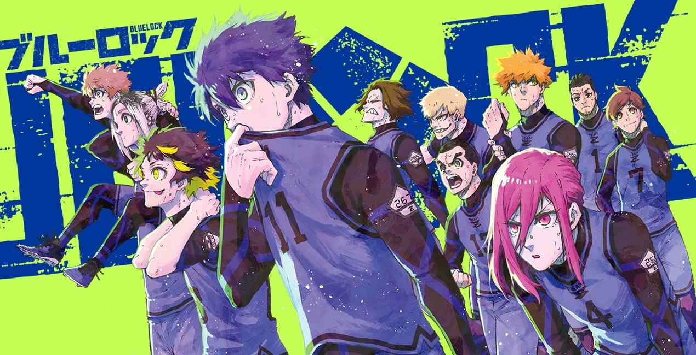

Bienvenue Dans le Programme de Blue Lock
 Dans ce programme le But de nos joueurs sera de se démarquer des autres, de véritables 'égoisto'.
Chaque semaine un classemant de la position de chacun de nos joueurs sera publié pour suivre leur avancé et leur évolution au fil des matchs.
Le joueur du moment n'est autre que Itoshi Rin, la star montante du projet Blue Lock, qui détient en ce moment tout les records. Le favori du public Isagi Yoichi fait une avancée spectaculaire en prenant la 5ème place du classement, rattrapant de très près les prodiges de ce projet, qui consiste à élever les meilleurs attaquants japonais et en faire des vrais "egoistos".
Rin Itoshi
Itoshi Rin est bien partie pour être le meilleur attaquant de ce projet Blue Lock.
Hâte de voir ce qu'il nous réserve pour la suite.
Kunigami Rensuke
Rensuke Kunigami, un attaquant idéal qui sait tirer de loin, avec sa frappe lors de son dernier match il monte dans le classement.
Meguru Bachira
Bachira Meguru alias le neymar japonais, un attaquant qui sait faire preuve d'ingéniosité face à l'adversaire
Isagi Yoichi
Le Joueur tant attendu, le préféré du public, Isagi Yoichi qui vient d'atteindre la 5ème position.
Avec sa magnifique frappe semi-volée, il fait gagner son équipe le dernier match à la dernière seconde, une star montante qui ne cesse de nous faire rever.